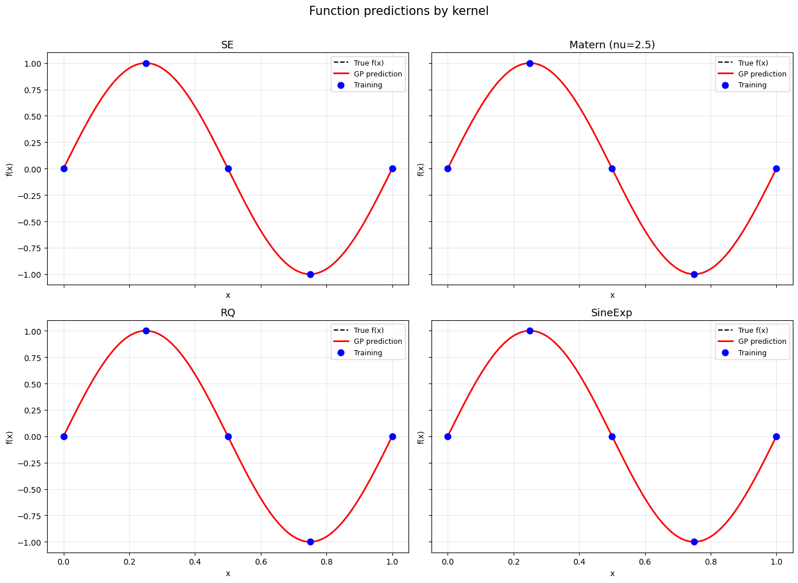
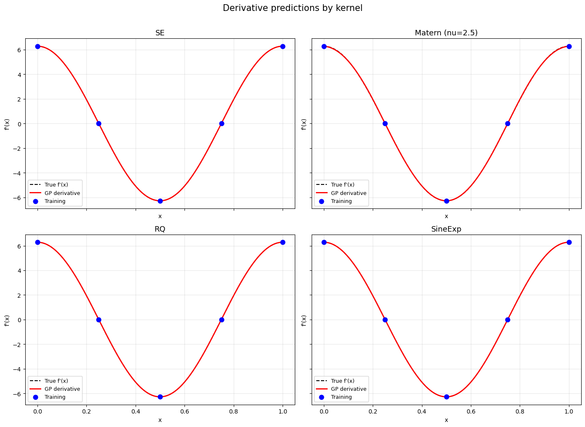
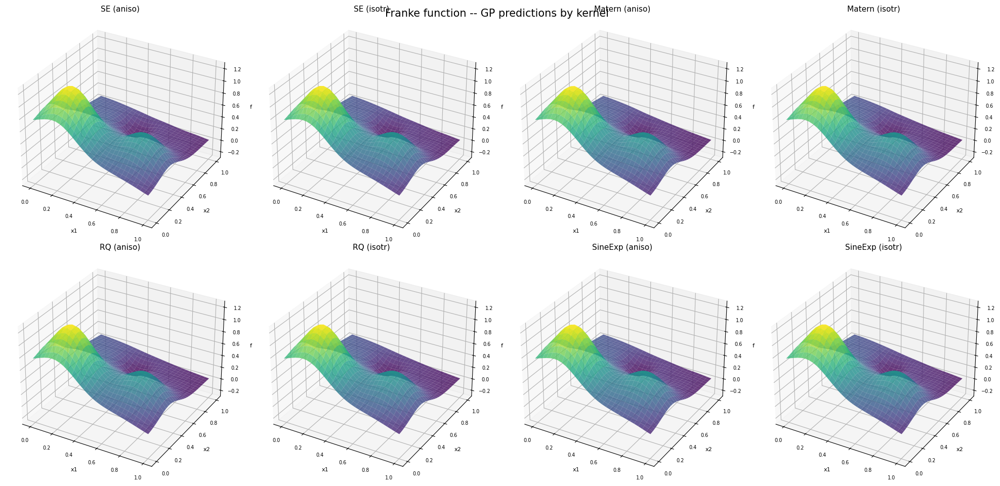
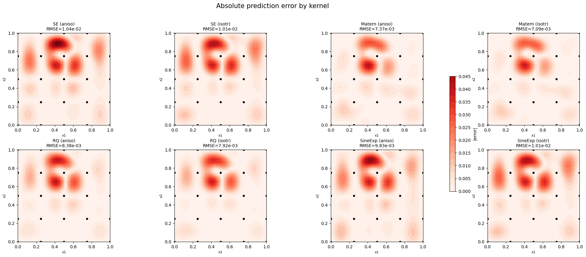

1D DEGP Kernel Comparison#
Overview#
This tutorial compares the four covariance kernels available in JetGP on a simple 1D derivative-enhanced GP. The same training data and derivative information are used for every kernel so that differences come only from the kernel choice:
SE (Squared Exponential) – infinitely smooth
Matern – controlled smoothness via the
smoothness_parameterRQ (Rational Quadratic) – scale mixture of SE kernels
SineExp (Sine-Exponential / Periodic Exponential) – captures periodic structure
We train on \(f(x) = \sin(2\pi x)\) with first-order derivatives at five points and compare the resulting function and derivative predictions.
—
Step 1: Import packages and define training data#
import numpy as np
from jetgp.full_degp.degp import degp
import matplotlib.pyplot as plt
# Training data: f(x) = sin(2*pi*x)
X_train = np.linspace(0, 1, 5).reshape(-1, 1)
y_func = np.sin(2 * np.pi * X_train)
y_deriv = 2 * np.pi * np.cos(2 * np.pi * X_train)
y_train = [y_func, y_deriv]
# First-order derivative at all training points
der_indices = [[[[1, 1]]]]
derivative_locations = [[i for i in range(len(X_train))]]
# Dense test grid
X_test = np.linspace(0, 1, 200).reshape(-1, 1)
f_true = np.sin(2 * np.pi * X_test)
df_true = 2 * np.pi * np.cos(2 * np.pi * X_test)
print(f"Training points: {len(X_train)}, Test points: {len(X_test)}")
Training points: 5, Test points: 200
Explanation: Five equally spaced training points with function values and first derivatives of \(\sin(2\pi x)\). We will fit every kernel to this same dataset.
—
Step 2: Squared Exponential (SE) kernel#
The SE kernel assumes the underlying function is infinitely differentiable. It is the most common GP kernel and produces very smooth predictions.
model_se = degp(X_train, y_train, n_order=1, n_bases=1,
der_indices=der_indices,
derivative_locations=derivative_locations,
normalize=True,
kernel="SE", kernel_type="anisotropic")
params_se = model_se.optimize_hyperparameters(
optimizer='pso', pop_size=100, n_generations=15,
local_opt_every=15, debug=False)
pred_se = model_se.predict(X_test, params_se, calc_cov=False, return_deriv=True)
print(f"SE -- Function RMSE: {np.sqrt(np.mean((pred_se[0,:] - f_true.flatten())**2)):.4e}")
print(f"SE -- Derivative RMSE: {np.sqrt(np.mean((pred_se[1,:] - df_true.flatten())**2)):.4e}")
Stopping: maximum iterations reached --> 15
SE -- Function RMSE: 3.0232e-06
SE -- Derivative RMSE: 4.8618e-05
—
Step 3: Matern kernel#
The Matern kernel family controls smoothness with the smoothness_parameter
(\(\alpha\)). The GP is \(\lceil\alpha\rceil\)-times differentiable.
smoothness_parameter=1gives \(\nu=1.5\) (Matern-3/2, once differentiable)smoothness_parameter=2gives \(\nu=2.5\) (Matern-5/2, twice differentiable)
We use smoothness_parameter=2 here since our training includes first derivatives.
model_matern = degp(X_train, y_train, n_order=1, n_bases=1,
der_indices=der_indices,
derivative_locations=derivative_locations,
normalize=True,
kernel="Matern", kernel_type="anisotropic",
smoothness_parameter=2)
params_matern = model_matern.optimize_hyperparameters(
optimizer='pso', pop_size=100, n_generations=15,
local_opt_every=15, debug=False)
pred_matern = model_matern.predict(X_test, params_matern, calc_cov=False, return_deriv=True)
print(f"Matern -- Function RMSE: {np.sqrt(np.mean((pred_matern[0,:] - f_true.flatten())**2)):.4e}")
print(f"Matern -- Derivative RMSE: {np.sqrt(np.mean((pred_matern[1,:] - df_true.flatten())**2)):.4e}")
Stopping: maximum iterations reached --> 15
Matern -- Function RMSE: 1.1303e-03
Matern -- Derivative RMSE: 1.6287e-02
—
Step 4: Rational Quadratic (RQ) kernel#
The RQ kernel is equivalent to an infinite mixture of SE kernels with different length scales. It has an extra shape parameter \(\alpha\) that controls how quickly the kernel transitions between length scales. As \(\alpha \to \infty\), the RQ kernel converges to the SE kernel.
model_rq = degp(X_train, y_train, n_order=1, n_bases=1,
der_indices=der_indices,
derivative_locations=derivative_locations,
normalize=True,
kernel="RQ", kernel_type="anisotropic")
params_rq = model_rq.optimize_hyperparameters(
optimizer='pso', pop_size=100, n_generations=15,
local_opt_every=15, debug=False)
pred_rq = model_rq.predict(X_test, params_rq, calc_cov=False, return_deriv=True)
print(f"RQ -- Function RMSE: {np.sqrt(np.mean((pred_rq[0,:] - f_true.flatten())**2)):.4e}")
print(f"RQ -- Derivative RMSE: {np.sqrt(np.mean((pred_rq[1,:] - df_true.flatten())**2)):.4e}")
Stopping: maximum iterations reached --> 15
RQ -- Function RMSE: 3.0277e-06
RQ -- Derivative RMSE: 4.8583e-05
—
Step 5: Sine-Exponential (SineExp) kernel#
The SineExp kernel is well-suited for functions with periodic or quasi-periodic structure. It has a period parameter \(p\) and a length-scale parameter \(\ell\). Since \(\sin(2\pi x)\) is periodic, this kernel is a natural fit.
model_sine = degp(X_train, y_train, n_order=1, n_bases=1,
der_indices=der_indices,
derivative_locations=derivative_locations,
normalize=True,
kernel="SineExp", kernel_type="anisotropic")
params_sine = model_sine.optimize_hyperparameters(
optimizer='pso', pop_size=100, n_generations=15,
local_opt_every=15, debug=False)
pred_sine = model_sine.predict(X_test, params_sine, calc_cov=False, return_deriv=True)
print(f"SineExp -- Function RMSE: {np.sqrt(np.mean((pred_sine[0,:] - f_true.flatten())**2)):.4e}")
print(f"SineExp -- Derivative RMSE: {np.sqrt(np.mean((pred_sine[1,:] - df_true.flatten())**2)):.4e}")
Stopping: maximum iterations reached --> 15
SineExp -- Function RMSE: 3.1205e-06
SineExp -- Derivative RMSE: 5.0176e-05
—
Step 6: Visual comparison – function predictions#
fig, axes = plt.subplots(2, 2, figsize=(14, 10), sharex=True, sharey=True)
kernels = [
("SE", pred_se),
("Matern (nu=2.5)", pred_matern),
("RQ", pred_rq),
("SineExp", pred_sine),
]
for ax, (name, pred) in zip(axes.flat, kernels):
ax.plot(X_test, f_true, 'k--', lw=1.5, label='True f(x)')
ax.plot(X_test, pred[0, :], 'r-', lw=2, label='GP prediction')
ax.scatter(X_train, y_func, c='blue', s=60, zorder=5, label='Training')
ax.set_title(name, fontsize=13)
ax.set_xlabel('x')
ax.set_ylabel('f(x)')
ax.legend(fontsize=9)
ax.grid(True, alpha=0.3)
fig.suptitle('Function predictions by kernel', fontsize=15, y=1.01)
plt.tight_layout()
plt.show()

—
Step 7: Visual comparison – derivative predictions#
fig, axes = plt.subplots(2, 2, figsize=(14, 10), sharex=True, sharey=True)
for ax, (name, pred) in zip(axes.flat, kernels):
ax.plot(X_test, df_true, 'k--', lw=1.5, label="True f'(x)")
ax.plot(X_test, pred[1, :], 'r-', lw=2, label='GP derivative')
ax.scatter(X_train, y_deriv, c='blue', s=60, zorder=5, label='Training')
ax.set_title(name, fontsize=13)
ax.set_xlabel('x')
ax.set_ylabel("f'(x)")
ax.legend(fontsize=9)
ax.grid(True, alpha=0.3)
fig.suptitle('Derivative predictions by kernel', fontsize=15, y=1.01)
plt.tight_layout()
plt.show()

—
Step 8: RMSE summary#
header = "{:<20} {:>15} {:>15}".format("Kernel", "f(x) RMSE", "f'(x) RMSE")
print("=" * 55)
print(header)
print("-" * 55)
for name, pred in kernels:
rmse_f = np.sqrt(np.mean((pred[0, :] - f_true.flatten()) ** 2))
rmse_d = np.sqrt(np.mean((pred[1, :] - df_true.flatten()) ** 2))
print("{:<20} {:>15.4e} {:>15.4e}".format(name, rmse_f, rmse_d))
print("=" * 55)
=======================================================
Kernel f(x) RMSE f'(x) RMSE
-------------------------------------------------------
SE 3.0232e-06 4.8618e-05
Matern (nu=2.5) 1.1303e-03 1.6287e-02
RQ 3.0277e-06 4.8583e-05
SineExp 3.1205e-06 5.0176e-05
=======================================================
—
Summary#
All four kernels successfully learn the 1D function and its derivative from five training points. Key takeaways:
SE produces the smoothest predictions and is a safe default for smooth functions.
Matern gives slightly rougher predictions, useful when the true function is not infinitely smooth. The
smoothness_parametercontrols the degree of differentiability.RQ behaves similarly to SE but has an extra degree of freedom for multi-scale phenomena.
SineExp excels on periodic functions, as it can learn the period directly.
When in doubt, start with SE and explore alternatives if the data suggests periodicity (SineExp), finite smoothness (Matern), or multi-scale structure (RQ).
—
2D DEGP Kernel Comparison: Isotropic vs Anisotropic#
Overview#
This example trains DEGP on a 2D function using all four kernels in both anisotropic and isotropic variants (8 models total). This demonstrates:
Anisotropic kernels learn a separate length scale per dimension, ideal when the function varies at different rates along different axes.
Isotropic kernels share a single length scale across all dimensions, which is simpler but can under-fit functions with directional structure.
We use the Franke function, a standard 2D test function with multiple Gaussian bumps at different scales – a good challenge for comparing kernel flexibility.
—
Step 1: Define the Franke function and its derivatives#
import numpy as np
from jetgp.full_degp.degp import degp
import matplotlib.pyplot as plt
def franke(X):
x1, x2 = X[:, 0], X[:, 1]
t1 = 0.75 * np.exp(-((9*x1 - 2)**2 + (9*x2 - 2)**2) / 4)
t2 = 0.75 * np.exp(-(9*x1 + 1)**2 / 49 - (9*x2 + 1) / 10)
t3 = 0.50 * np.exp(-((9*x1 - 7)**2 + (9*x2 - 3)**2) / 4)
t4 = -0.20 * np.exp(-(9*x1 - 4)**2 - (9*x2 - 7)**2)
return t1 + t2 + t3 + t4
def franke_dx1(X):
x1, x2 = X[:, 0], X[:, 1]
t1 = 0.75 * np.exp(-((9*x1-2)**2 + (9*x2-2)**2)/4) * (-2*(9*x1-2)*9/4)
t2 = 0.75 * np.exp(-(9*x1+1)**2/49 - (9*x2+1)/10) * (-2*(9*x1+1)*9/49)
t3 = 0.50 * np.exp(-((9*x1-7)**2 + (9*x2-3)**2)/4) * (-2*(9*x1-7)*9/4)
t4 = -0.20 * np.exp(-(9*x1-4)**2 - (9*x2-7)**2) * (-2*(9*x1-4)*9)
return t1 + t2 + t3 + t4
def franke_dx2(X):
x1, x2 = X[:, 0], X[:, 1]
t1 = 0.75 * np.exp(-((9*x1-2)**2 + (9*x2-2)**2)/4) * (-2*(9*x2-2)*9/4)
t2 = 0.75 * np.exp(-(9*x1+1)**2/49 - (9*x2+1)/10) * (-9/10)
t3 = 0.50 * np.exp(-((9*x1-7)**2 + (9*x2-3)**2)/4) * (-2*(9*x2-3)*9/4)
t4 = -0.20 * np.exp(-(9*x1-4)**2 - (9*x2-7)**2) * (-2*(9*x2-7)*9)
return t1 + t2 + t3 + t4
print("Franke function and gradients defined.")
Franke function and gradients defined.
—
Step 2: Generate training and test data#
np.random.seed(42)
# Training: 25 points on a 5x5 grid
g = np.linspace(0, 1, 5)
xx, yy = np.meshgrid(g, g)
X_train = np.column_stack([xx.ravel(), yy.ravel()])
y_func = franke(X_train).reshape(-1, 1)
y_dx1 = franke_dx1(X_train).reshape(-1, 1)
y_dx2 = franke_dx2(X_train).reshape(-1, 1)
y_train = [y_func, y_dx1, y_dx2]
# First-order partial derivatives at all training points
der_indices = [[[[1, 1]], [[2, 1]]]]
derivative_locations = [list(range(len(X_train))), list(range(len(X_train)))]
# Test: 30x30 grid
g_test = np.linspace(0, 1, 30)
xx_t, yy_t = np.meshgrid(g_test, g_test)
X_test = np.column_stack([xx_t.ravel(), yy_t.ravel()])
f_true = franke(X_test)
print(f"Training: {len(X_train)} points, Test: {len(X_test)} points")
Training: 25 points, Test: 900 points
—
Step 3: Train all 8 kernel variants#
We define a helper that creates, optimizes, and predicts for each kernel configuration. This keeps the example concise while covering all 8 variants.
kernel_configs = [
("SE", "anisotropic", {}),
("SE", "isotropic", {}),
("Matern", "anisotropic", {"smoothness_parameter": 2}),
("Matern", "isotropic", {"smoothness_parameter": 2}),
("RQ", "anisotropic", {}),
("RQ", "isotropic", {}),
("SineExp", "anisotropic", {}),
("SineExp", "isotropic", {}),
]
results = {}
for kern, ktype, extra_kw in kernel_configs:
label = f"{kern} ({ktype[:5]})"
print(f"Training {label} ...", end=" ")
m = degp(X_train, y_train, n_order=1, n_bases=2,
der_indices=der_indices,
derivative_locations=derivative_locations,
normalize=True,
kernel=kern, kernel_type=ktype, **extra_kw)
p = m.optimize_hyperparameters(
optimizer='pso', pop_size=100, n_generations=15,
local_opt_every=15, debug=False)
pred = m.predict(X_test, p, calc_cov=False, return_deriv=False)
rmse = np.sqrt(np.mean((pred.flatten() - f_true.flatten())**2))
results[label] = {"pred": pred, "rmse": rmse, "params": p}
print(f"RMSE = {rmse:.4e}")
Training SE (aniso) ...
Stopping: maximum iterations reached --> 15
RMSE = 1.0447e-02
Training SE (isotr) ...
Stopping: maximum iterations reached --> 15
RMSE = 1.0111e-02
Training Matern (aniso) ...
Stopping: maximum iterations reached --> 15
RMSE = 7.3733e-03
Training Matern (isotr) ...
Stopping: maximum iterations reached --> 15
RMSE = 7.0947e-03
Training RQ (aniso) ...
Stopping: maximum iterations reached --> 15
RMSE = 8.3784e-03
Training RQ (isotr) ...
Stopping: maximum iterations reached --> 15
RMSE = 7.9168e-03
Training SineExp (aniso) ...
Stopping: maximum iterations reached --> 15
RMSE = 9.8313e-03
Training SineExp (isotr) ...
Stopping: maximum iterations reached --> 15
RMSE = 1.0111e-02
—
Step 4: RMSE summary table#
print("=" * 45)
print(f"{'Kernel':<25} {'RMSE':>15}")
print("-" * 45)
for label in results:
print(f"{label:<25} {results[label]['rmse']:>15.4e}")
print("=" * 45)
=============================================
Kernel RMSE
---------------------------------------------
SE (aniso) 1.0447e-02
SE (isotr) 1.0111e-02
Matern (aniso) 7.3733e-03
Matern (isotr) 7.0947e-03
RQ (aniso) 8.3784e-03
RQ (isotr) 7.9168e-03
SineExp (aniso) 9.8313e-03
SineExp (isotr) 1.0111e-02
=============================================
Explanation: Anisotropic kernels typically outperform their isotropic counterparts on the Franke function because it has bumps at different scales along each axis.
—
Step 5: Visual comparison – surface predictions#
fig, axes = plt.subplots(2, 4, figsize=(20, 10),
subplot_kw={'projection': '3d'})
labels = list(results.keys())
for idx, label in enumerate(labels):
row, col = divmod(idx, 4)
ax = axes[row, col]
pred = results[label]["pred"]
Z = pred.flatten().reshape(30, 30)
ax.plot_surface(xx_t, yy_t, Z, cmap='viridis', alpha=0.8,
rstride=1, cstride=1, linewidth=0)
ax.set_title(label, fontsize=11, pad=2)
ax.set_xlabel('x1', fontsize=8)
ax.set_ylabel('x2', fontsize=8)
ax.set_zlabel('f', fontsize=8)
ax.tick_params(labelsize=7)
ax.set_zlim(-0.3, 1.3)
plt.suptitle('Franke function -- GP predictions by kernel', fontsize=15, y=0.95)
plt.tight_layout()
plt.show()

—
Step 6: Error heatmaps#
fig, axes = plt.subplots(2, 4, figsize=(20, 8))
labels = list(results.keys())
# Shared color scale
max_err = max(
np.max(np.abs(results[l]["pred"].flatten() - f_true.flatten()))
for l in labels
)
for idx, label in enumerate(labels):
row, col = divmod(idx, 4)
ax = axes[row, col]
err = np.abs(results[label]["pred"].flatten() - f_true.flatten()).reshape(30, 30)
im = ax.contourf(xx_t, yy_t, err, levels=20, cmap='Reds', vmin=0, vmax=max_err)
ax.scatter(X_train[:, 0], X_train[:, 1], c='black', s=15, zorder=5)
ax.set_title(f"{label}\nRMSE={results[label]['rmse']:.2e}", fontsize=10)
ax.set_xlabel('x1', fontsize=8)
ax.set_ylabel('x2', fontsize=8)
ax.set_aspect('equal')
fig.colorbar(im, ax=axes, label='|error|', shrink=0.6)
plt.suptitle('Absolute prediction error by kernel', fontsize=15, y=1.02)
plt.tight_layout()
plt.show()

—
Summary#
All 8 kernel variants (4 kernels x 2 types) successfully learn the 2D Franke function from 25 training points with first-order partial derivatives.
Anisotropic kernels generally achieve lower RMSE because the Franke function has different length scales in each direction. Use anisotropic kernels when the number of hyperparameters is manageable (low to moderate dimensionality).
Isotropic kernels have fewer hyperparameters and are faster to optimize, making them a practical choice for high-dimensional problems where learning per-dimension length scales becomes expensive.
SE and RQ tend to produce the smoothest surfaces.
Matern is a good choice when the function has limited smoothness.
SineExp should be preferred when the data has periodic structure.